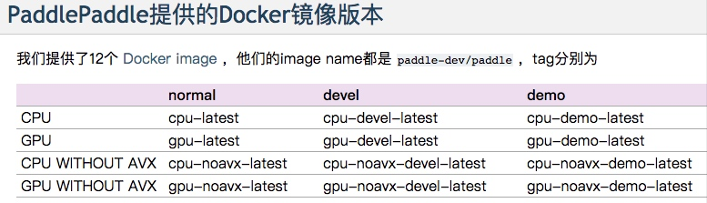

http://learn.baidu.com/pages/index.html#/video/?courseId=13655&elementId=ec41cf99-5d69-4f17-807b-3b9668d64f75&userId=5879362&groupId=477326&_k=imsxjl
mac安装
方法一：pip install paddlepaddle
方法二： docker安装
1.安装docker for mac
下载链接
https://download.docker.com/mac/stable/Docker.dmg
docker --version
docker-compose --version
docker-machine --version
2.安装paddlepaddle的镜像版本
https://livc.io/173
(1)根据自己的机器选择合适的版本
http://doc.paddlepaddle.org/release_doc/0.9.0/doc_cn/build_and_install/install/docker_install.html
我这个地方选择的是cpu-noavx-latest
(2)下载镜像

docker pull paddledev/paddle:cpu-noavx-latest
(3)运行
docker run -it paddledev/paddle:cpu-noavx-latest
root@a60119636542:/# paddle version
PaddlePaddle 0.9.0a0, compiled with
with_avx: OFF
with_gpu: OFF
with_double: OFF
with_python: ON
with_rdma: OFF
with_glog: ON
with_gflags: ON
with_metric_learning:
with_timer: OFF
with_predict_sdk:
root@a60119636542:/#
退出： ctrl+d
3.试玩环境
华东在机器上装了一个环境。
http://wiki.baidu.com/pages/viewpage.action?pageId=329462880
/home/work/duhuadong/python27-gcc482/bin/python train.py
/home/work/duhuadong/models-develop/text_classification
work@yq01-ps-feed201705-m120007.yq01.baidu.com